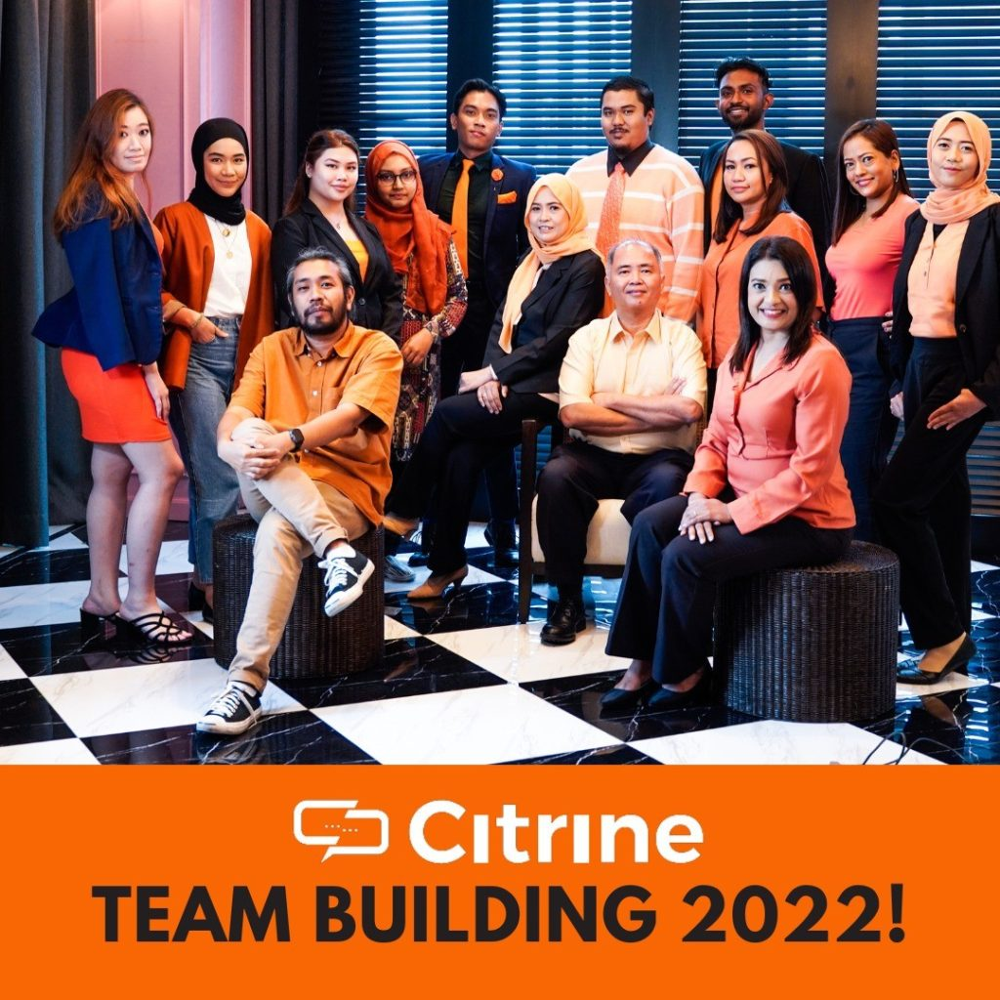
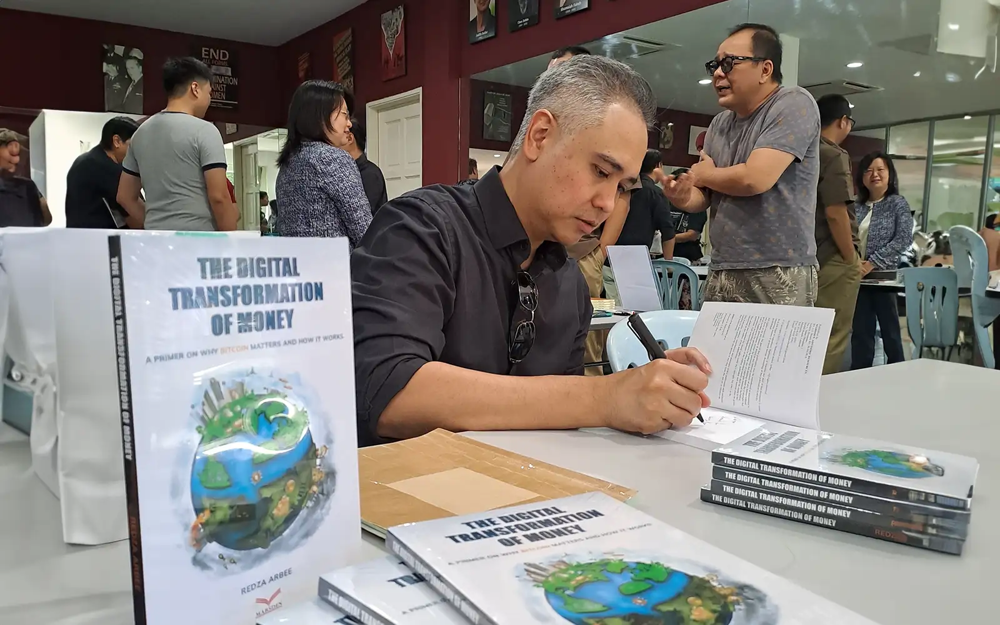

Ivlynn Yap
Founder & Executive Chairman
Strategic communications · Malaysia
Citrine helps organisations shape their stories, earn trust and respond with confidence when the conversation matters most.
Shaping Stories. Inspiring Results.

About Citrine
Communications with perspective
Founded in 2001, Citrine One Malaysia is a strategic communications and crisis communications consultancy serving corporate organisations, government and SMEs. Its work brings together experienced communications counsel, stakeholder understanding and a journalist’s view of how stories travel.
With operations in Kuala Lumpur and Penang and a regional network, Citrine works across reputation, leadership, research and social impact.
Meet the leadership & networkPeople & collaborators
Founder & Executive Chairman

Founder & Executive Director, Social Enterprise Initiative
Leadership profile
Founder & Group Executive Chairman
Ivlynn brings more than 30 years of experience across journalism, regional marketing communications, public relations, stakeholder engagement and crisis communications. She founded Citrine One and returned to lead the group in 2024.
Her career has included reporting and editorial roles at The Star, Asia Computer Weekly and Asia Pacific Telecommunications; regional marketing communications at AMD; editorial, production and business development at CNET; and communications leadership at Perbadanan Insurans Deposit Malaysia (PIDM).
300+clients served by Citrine under Ivlynn’s leadership, as stated in the group’s speaker profile.
Profile references: Citrine speaker profile ↗ · PR Asia speaker biography ↗ · Citrine leadership announcement ↗
Leadership profile
Founder & Executive Director, Social Enterprise Initiative
Redza is a digital transformation professional and author with more than 17 years of experience across finance, technology and the public sector. His work has included digital adoption, technology strategy and digitalisation initiatives.
His career includes digital adoption and cloud initiatives at Khazanah Nasional, partnership groundwork for the United Nations Technology Innovation Lab in Malaysia (UNTIL), and policy and industry development work at Malaysia’s Multimedia Development Corporation (MDEC).
10,000+copies of the Money Wise Tales series distributed to more than 30 primary schools, as reported in October 2026.
Profile references: Redza’s professional bio ↗ · Citrine programme announcement ↗ · Free Malaysia Today feature ↗ · Publisher listing ↗
Central Force Insight · Beyond Insights · ABSS (Financio) · Perdana Leadership Foundation · Wong Jin Nee & Teo Advocates & Solicitors · Abra Consulting
Services
Practical counsel, integrated thinking
Clear pathways from reputation challenges to long-term capability. Explore the service, programme and research routes that fit your needs.
Communications planning, positioning and practical counsel for corporate priorities.
Explore programmes ↗02 / READINESSPreparedness, issue response and reputation support for high-pressure moments.
Build readiness ↗03 / RELATIONSHIPSThoughtful engagement with the people and communities who shape outcomes.
See related programmes ↗04 / EVIDENCEResearch and survey management to understand perceptions and inform decisions.
Explore research ↗C-suite programmes
Leadership, readiness & reputation
A focused programme range for senior leaders and the teams who advise them.
Plan response roles and practise decision-making through realistic crisis scenarios.
Map key audiences and build thoughtful approaches to listening, engagement and communication.
Explore ways to navigate difficult conversations, resolve tensions and find practical paths forward.
Understand reputational risks and align communications to build trust over time.
Build awareness of economic crime risks and consider responsible response approaches.
Insights & research
Ideas, evidence and perspective
An organised home for the CF Insights series, research, articles, opinion pieces and media releases. Related items can connect back to the service or programme they inform.
A series for data-led insights and perspectives on issues that matter. The archive can bring episodes, transcripts and supporting links together.
View Citrine updatesBrand perception research and survey management, with project summaries and methodology notes.
Browse published work and commentary by Citrine’s leaders.
A home for Citrine announcements, with release details and media contact information.
Books
Selected titles from Citrine’s leaders.
Learning that reaches beyond the boardroom
A distinct social enterprise area, connected to the Citrine story and designed for sponsors, collaborators and community partners.
A financial literacy learning experience for children.
Discuss partnership ↗A social enterprise initiative that supports entrepreneurship learning.
Explore collaboration ↗Make the next step clear
For strategic communications, crisis support, leadership programmes or social enterprise enquiries, reach Citrine directly.
Privacy
Citrine One uses the details you provide to respond to your enquiry.
The enquiry form prepares an email to hello@citrine.com.my; your message is sent only when you choose to send it from your email app.
Back to contact